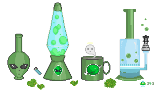
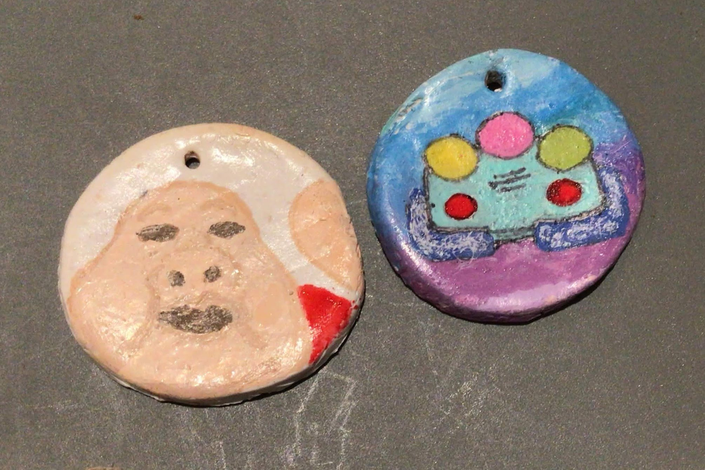
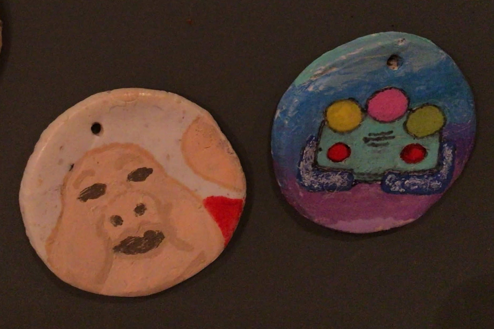
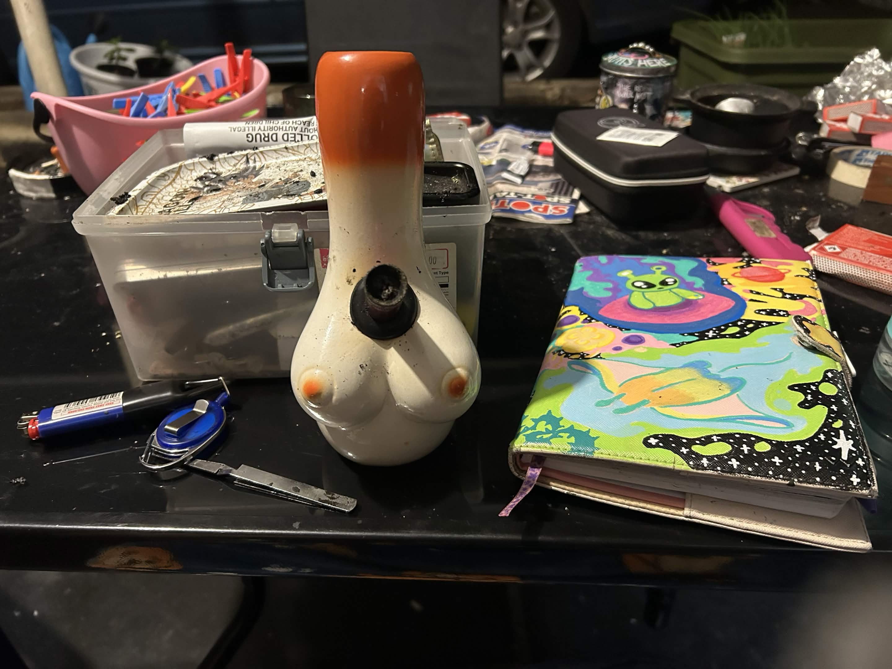
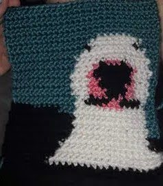
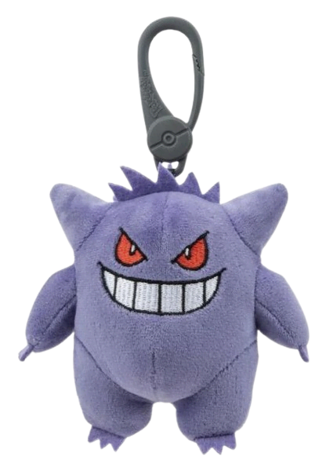
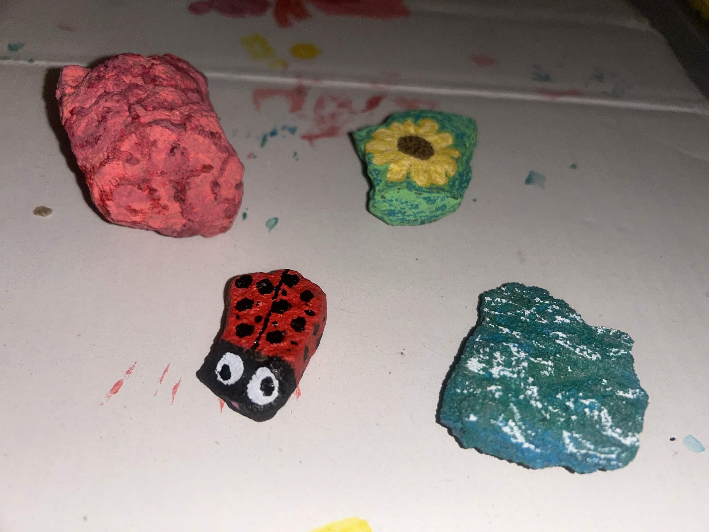
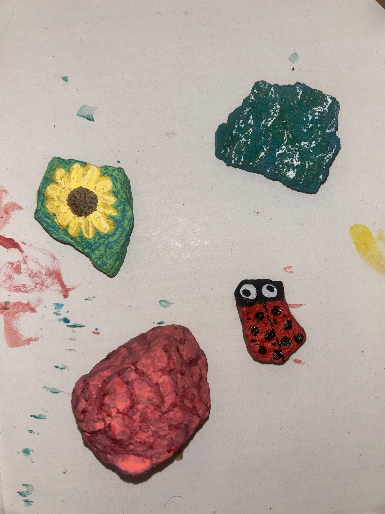
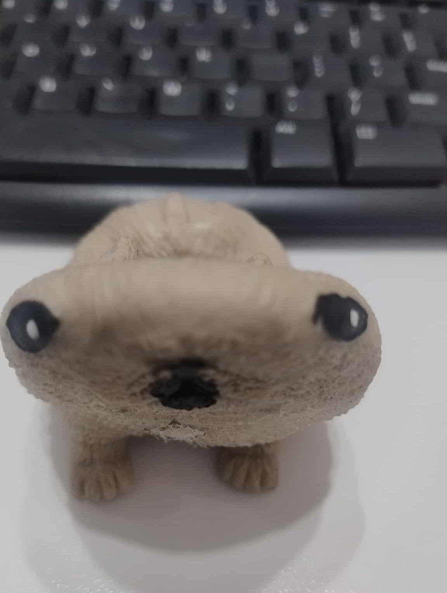
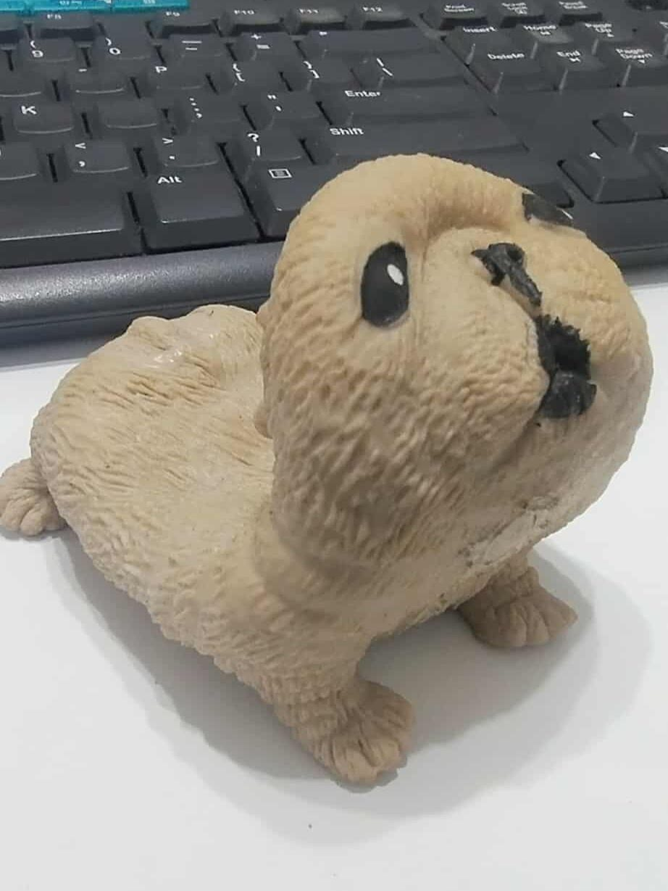

Also Hans' actor absolutely belting in this one mission where they're trapped in a dungeon has just been playing in me head on repeat. Apparently he's a good singer too! Maybe you have to be skilled so you know exactly just how to make it as terrible as he did?
im a big fan of RTVS and what they've made, especially gameclam. i had clay, i made circles, and i had inspiration thanks to the best video game console evar. nintendo and playstation are SCARED !!!!WITNESS GAMECLAM





I'm crazy about this thing,

i painted rocks for the garden, probably worn by bong water now

yeah im fucking obsessed with this thing one of my best friends keeps on their desk at work, so pathetic and so so wonderful